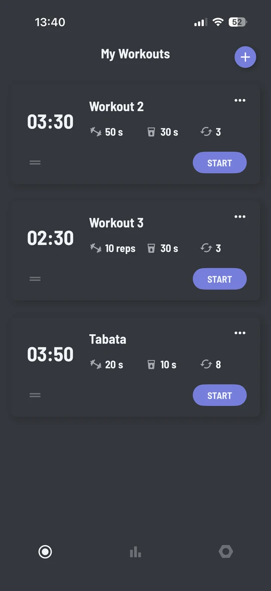
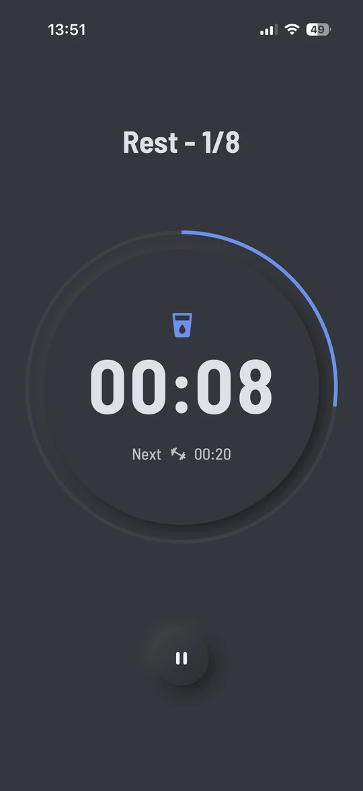

How to Set Up a Tabata Timer on iPhone (20/10 × 8)
A Tabata timer is 20 seconds of work, 10 seconds of rest, repeated for 8 rounds. In Core, open My Workouts and start the saved workout named Tabata — the list shows 20 s work, 10 s rest, 8 sets, and a total of 3:50 — or create the same settings yourself. Work can be a duration in seconds or a rep count, together with rest and sets. During a session, work is red, rest is blue, and an audio cue marks each switch. This page covers setup only. It does not make training or fat-loss claims.

Quick facts
| Tabata pattern | 20 seconds work, 10 seconds rest, 8 sets |
|---|---|
| In Core | A saved workout named Tabata, or a custom workout with the same work, rest and sets |
| Listed duration | 3:50 (8 × 20 s work + 7 × 10 s rest; no rest after the last work interval) |
| On screen | Red ring for work, blue ring for rest, audio cue at each switch |
| Work interval | A duration in seconds, or a rep count, plus rest and sets |
| Not included | Lock Screen or background cues, Apple Watch, a voice coach, or music sync |
| Price | Free to download; Core Pro optional. Current pricing is on the Core page. |
What 20/10 × 8 means in Core
Those three numbers are work, rest and sets. In the saved Tabata workout, work is 20 seconds, rest is 10 seconds, and the set count is 8. The timer labels the current interval as “Workout - 1/8” or “Rest - 1/8,” and shows the next interval underneath.
The list shows 3:50, not 4:00, because there is no rest after the eighth work interval: 8 × 20 seconds + 7 × 10 seconds = 230 seconds = 3:50. That is what the live My Workouts screen displays.
How to start a Tabata timer
- Download Core and open it.
- Open My Workouts.
- If you want the standard pattern, start the saved workout named Tabata (20 s work, 10 s rest, 8 sets, 3:50).
- To create the same pattern yourself: add a workout, set work to 20 seconds, rest to 10 seconds, and sets to 8, then save and start it.
- During work you will see a red ring and the next rest (10 seconds) below. During rest you will see a blue ring and the next work (20 seconds) below. An audio cue marks each switch.


Work as time or as reps
In Core, work can be a duration in seconds or a number of reps, together with rest and sets. The same My Workouts list that includes Tabata also shows a workout whose work is “10 reps,” with 30 seconds of rest and 3 sets. A standard Tabata setup uses 20-second work, not a rep count. This page does not describe a tap-to-count mode, which is not shown in the current screens.
What this timer does not do
The current version of Core does not offer Lock Screen or background cues, and it does not include an Apple Watch app. Keep the timer on screen for the session. Core plays audio cues when work and rest switch; it does not include a voice coach or music sync. This guide also does not cover building a sequence of stations with different durations — only the same work and rest, repeated across multiple sets, which is what the Tabata workout uses.
Free and optional Pro
Core is free to download. Core Pro is optional: it adds unlimited timers and duplicates, full workout history, monthly and yearly trends, and CSV export. For current pricing, see the Core product page.
FAQ
What is a Tabata timer?
A Tabata timer is 20 seconds of work followed by 10 seconds of rest, repeated for 8 rounds. In Core this is work 20 s, rest 10 s, and 8 sets.
Does Core include a Tabata workout?
Yes. My Workouts includes a saved workout named Tabata with 20 s work, 10 s rest and 8 sets. The list shows a total of 3:50.
Why does the Tabata workout show 3:50 instead of 4:00?
Eight work intervals of 20 seconds are 160 seconds. There are 7 rests of 10 seconds between them (70 seconds), and no rest after the last work interval. That is 230 seconds, or 3:50, which is what the My Workouts list shows.
Can work be counted in reps instead of seconds?
Yes. In Core, work can be a duration in seconds or a rep count, together with rest and sets. My Workouts also shows a reps-based workout (for example, 10 reps, 30 s rest, 3 sets). A standard Tabata setup uses 20-second work, not reps.
How do I tell work from rest on the timer?
Work uses a red ring; rest uses a blue ring. The label shows Workout or Rest and the current set, such as 1/8. The next interval’s duration appears under the current one. An audio cue marks each switch.
Does Core run on the Lock Screen, in the background, or on Apple Watch?
No. The current version of Core does not offer Lock Screen or background cues, and it does not include an Apple Watch app. Keep the timer on screen for the session.
Does Core have a voice coach or music sync?
No. Core plays audio cues when work and rest switch. It does not include a voice coach or music sync.
Is Core free?
Core is free to download. Core Pro is optional and adds unlimited timers and duplicates, full workout history, monthly and yearly trends, and CSV export. Current pricing is on the Core page.